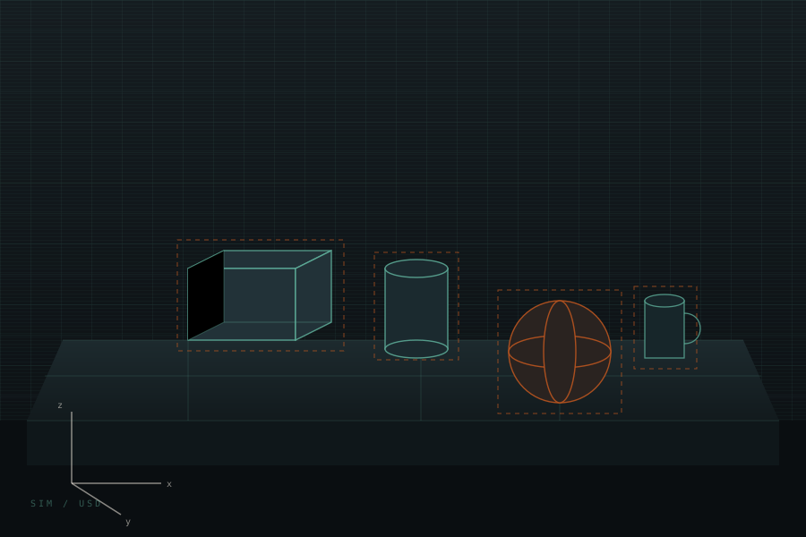
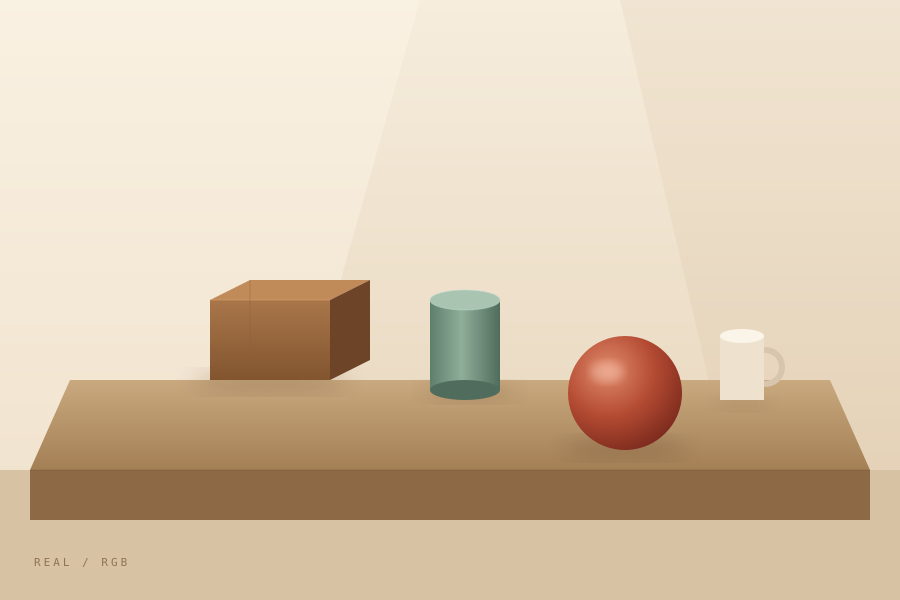

01 / SCENE
Describe the world.
Assets, poses, physics, cameras, and reset events are declared once. Contract tests lock the wiring before a number exists.
Project · 2026
Scene onboarding, camera and rendering fidelity, L0–L3 protocol validation, and a silent-failure audit — built on Isaac Sim / Isaac Lab / Arena.

Simulation scores are often treated as model properties. In practice they are properties of the whole measurement stack: the renderer, the camera domain, the criteria, the protocol state, and the data path. A single changed setting can move success rate by tens of points.
SIM-EVAL treats the stack as an instrument. Every scene, camera, protocol, and artifact carries a fingerprint; every score is traceable to a run, a condition set, and a validation state. The result is not a prettier leaderboard. It is a way to tell whether a number is comparable at all — and to make silent failures loud.
Assets, poses, physics, cameras, and reset events are declared once. Contract tests lock the wiring before a number exists.
Conditions are chosen before validation and read-only during it. A baseline, L0–L3 checks, and per-condition confidence intervals decide what the protocol can say.
Keyframes, state, per-episode results, and a gate that can say “practice” or “not validated.” A score without evidence is just a number.
RealTimePathTracing, a frozen kit hash, and per-step fabric sync. If the fingerprint changes, the score is not comparable.
Official pinhole distortion, image-domain remap, gain, and keyframes. The model input is not the raw keyframe — and the difference matters.
L0 valid, L1 measurable, L2 discriminative, L3 robust. Conditions are the protocol's identity; validation cannot cherry-pick them.
Frozen cameras, stale joint reads, no-op writes, overwritten criteria, gated steps. A symptom-to-cause table is worth more than an API reference.


REAL / RGB SIM / USDDrag to compare. The geometry is aligned; the measurement stack is not. Always validate the stack before comparing the model.
Illustrative from the platform's own regression history. The exact numbers are not the point: the renderer and camera domain can move a score by tens of points. Align the instrument first.
Placeholder motion graphic. Replace assets/video/demo.mp4 and its poster with your own run; keep it short, muted, and captioned.
@misc{li2026simeval,
title = {SIM-EVAL: A Reproducible Simulation Evaluation Stack for Vision-Language-Action Models},
author = {Li, Shouzhe},
year = {2026},
howpublished = {Project page},
note = {Private platform; details abstracted},
url = {https://github.com/ShouzheLi}
}